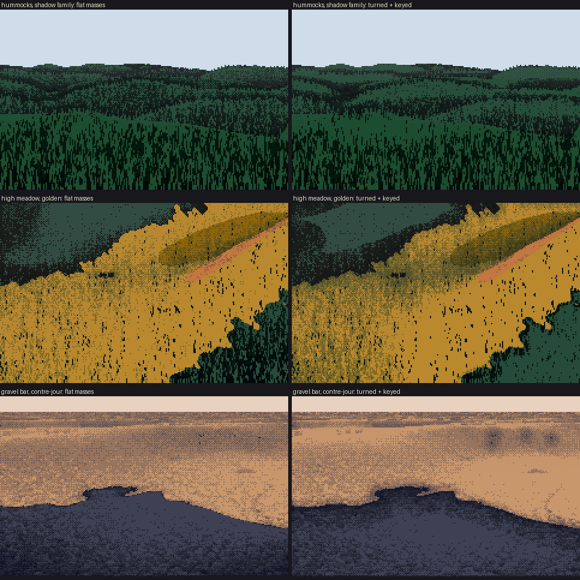
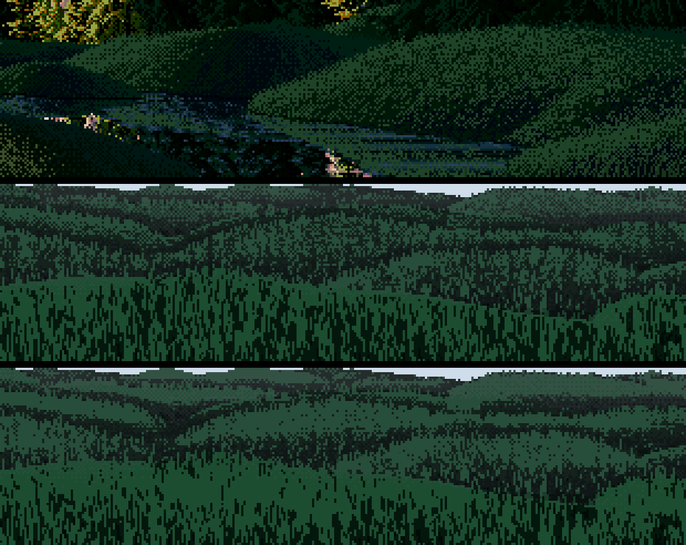
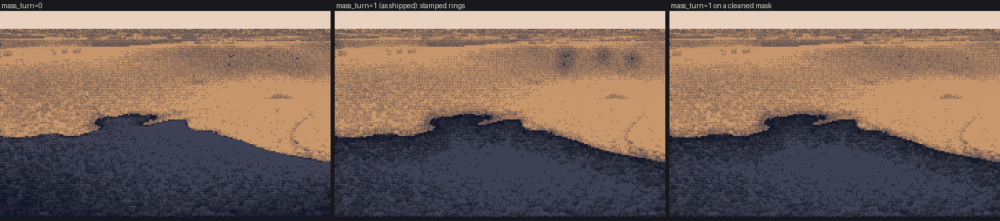

Lesson 3: Turn the masses
Back to the course. Previous: Design the masses.
A notan of well-designed shapes still paints as construction paper if each shape is one flat value with a noisy edge. That was the coordinator's word for my first scenes. Ferrari's masses are forms, and each one turns inside its family. This lesson covers the terms that do that, in turn_masses and the keying block of paint_ground.

t_turn_off_on. Three scenes, with crest_band=0, mass_turn=0, lit_key=0 on the left and the defaults on the right. (Shadow keying, section 5, is on in both. Its effect is in the hummock pictures below.)
1. The crest band (measured on V16)
Lesson 1 measured V16's hummocks by depth below their crests: a darker accent on the crest, a lit band about a quarter of the way down, then a fall to a dark base where the next hummock overlaps. As a function of t (0 at the crest, 1 at the base):
def crest_profile(t, accent=0.35, peak=0.25):
up = accent + (1 - accent) * np.clip(t / peak, 0, 1) ** 0.7
down = np.clip(1 - (t - peak) / (1 - peak), 0, 1) ** 0.9
return np.where(t < peak, up, down)
Every pixel needs a t, so crest_runs walks each column and breaks it at occlusion edges: a row where the depth jumps by more than 25% and more than 2 m, or the skyline. Each run below a break is one land unit.
brk[1:] = ((z[:-1] > z[1:] * 1.25) & (z[:-1] - z[1:] > 2.0)) | buf['sky'][:-1]
# for every column: k = rows below the break, Ln = the run's length, capped
t = np.clip(k / np.minimum(Ln, cap), 0, 1)
The 2 m condition matters. Without it, every little ripple in the near ground counted as a crest and got its own band and fringe. Near ground is also different from a hummock: a run that reaches the frame's bottom edge has no base in view. So an open run relaxes back to neutral after its band instead of falling to a dark foot:
f = crest_profile(t)
relax = 0.45 + 0.55 * np.exp(-np.clip(t - 0.25, 0, None) / 0.3)
f = np.where(open_ & (t > 0.25), relax, f)
f = ndi.gaussian_filter(f, (0.6, 2.0)) # a form, not per-column noise
out = out + crest_band * np.where(lit, 0.9, 1.3) * (f - 0.45)
The band is stronger in the shadow family (1.3) than in the light (0.9). In shadow the band is almost all the form there is.
Test it with the right landform. My first "hummocks" were sixty overlapping bumps, which made no occlusion crests at all, so the band had nothing to follow. I rebuilt the landform as separate, flat-bottomed lozenges with the long axis across the view and flat ground between them. Before you judge a value term, make sure the geometry gives it something to work on.

s10_hummocks_4x. V16's hummocks (top), mine with no turn, mine with the crest band, convexity and keying.
2. Convexity and a sky with a direction
The crest band is one-dimensional, running down the screen. Ferrari's big hummock also turns sideways: lit on its upper right, dark on its left flank. That has to come from the geometry. Two terms supply it.
Convexity: land higher than its surroundings takes more sky, and land lower takes less.
ring = np.mean([land.h(X + 3 * np.cos(a), Z + 3 * np.sin(a)) for a in np.linspace(0, 6.28, 8, endpoint=False)], 0)
buf['convex'] = (land.h(X, Z) - ring) / 0.6
out = out + crest_band * np.where(lit, 0.5, 0.9) * np.tanh(2.5 * buf['convex'])
Scale the ring (3 m here) to your land's feature size.
Directional skylight: the bright part of the sky is on the sun's side, and surfaces that face it are the "light" of the shadow family. Exaggerate it, because Ferrari turns land more than nature does:
skyv = normalize([0, 1, 0] + 0.9 * sun_horizontal)
ns = (n_macro * skyv).sum(-1); n0 = skyv[1] # n0: a flat plane's value
sky = np.clip(0.55 + 0.45 * np.tanh(6 * (ns - n0)) - 0.3 * hollow, 0, 1)
v_shadow = 0.5 + 1.8 * sky ** 1.2 + ...
At dusk this is the only form language there is. The same trick exaggerates the lit family's N·L around flat ground: 0.45 * np.tanh(2.5 * (r - 1)) steps.
3. The mass turn: hot pools and dark cores
Each lit shape is hottest in its interior and falls off, through the dither, toward its edge. This is what the V16 islet does. Each shadow has a dark core line just inside its edge, then lifts in its broad interior with reflected light. Both are functions of distance to the family boundary:
dl = ndi.distance_transform_edt(lit); ds = ndi.distance_transform_edt(~lit)
D = max(6.0, 0.06 * min(H, W))
out = out + mass_turn * np.where(lit,
1.0 * (np.clip(dl / D, 0, 1) - 0.55),
-0.8 * np.exp(-ds / 3.0) + 0.7 * (np.clip(ds / (2.5 * D), 0, 1) - 0.4))
The dark core is the single cheapest way to stop a shadow looking pasted on.
A bug: stamped rings
Writing this course, I found three dark dithered rings in open lit ground on the gravel bar. The terminator noise from lesson 2 leaves one- and two-pixel specks of "shadow" inside lit areas. The distance transform sees each speck as an edge, so the lit ground within D of it darkens, and a stamped halo appears. That's exactly the "stamped ellipse" failure the second critic listed for the whole studio. Fill small specks before any distance transform:
def clean_mask(lit, min_px=30):
lit = lit.copy()
for val in (False, True):
lab, n = ndi.label(lit == val)
s = ndi.sum(np.ones_like(lab), lab, range(1, n + 1))
lit[np.isin(lab, np.nonzero(s < min_px)[0] + 1)] = not val
return lit

t_blob_bug. No mass turn; the mass turn as shipped (rings); the mass turn on a cleaned mask. The study's code still has the bug. The fix above is applied as a patch in figs.py.
And a limit: turn far, not near
The mass turn and crest band belong to the middle and far ground. On near grass they push the whole lit field up to the top step, which flattens it. Near grass turns by stroke density, not by a value ramp. Lesson 4 measures this, and shows a fade by blade size that helps.
4. Key each family by its own quantiles
After all the turning, a family can still sit in one step. My hummock shadow was 83% one step where V16's is about 15/47/38 across three. There were three causes, and all of them are worth checking in your own palette:
- Distance haze lifted the black point until the two darkest steps were nearly the same colour. Lift the darks gently:
python
w = f * np.array([0.6, 0.7, 0.9, 1.4, 1.1, 0.6])[:, None]
- The shadow ramp had a small gap between its upper steps. V16's hummocks jump from L* 6 to L* 25. My turf shadow ramp is now L* 3 / 8 / 29.
- Skylight on flat ground pushed the whole shadow to the top of its family.
The general fix is a value plan instead of a lighting formula. Whatever turning the land and light gave you, stretch the family to fill its designed range:
sm = (~lit) & ground & ~buf['sky'] # exclude the sky, or the percentiles lie
q = np.percentile(v[sm], [3, 50, 97])
v = np.where(sm, np.interp(v, q, [0.15, 1.0 + shadow_key, 2.3], left=0.2, right=2.6), v)
lm = lit & ground & ~buf['sky']
q = np.percentile(v[lm], [3, 50, 97])
vk = np.interp(v, q, [3.05, 4.35, 5.75], left=3.0, right=5.9)
v = np.where(lm, (1 - lit_key) * v + lit_key * vk, v)
Watch the mask. My first keying made the hummocks worse (79% one step), because the sky's pixels were still in it. After excluding them and lowering the targets, the steps came out 13/31/56, against his 15/47/38. Measure the shares every time (measure.step_shares).
This keying is the piece the voxsim near-painting lane adopted.
5. Lit sweeps on a meadow
The same keying rescues a lit meadow on gentle swells, which otherwise paints as one ochre. The voxsim lane's dusk frame showed this gap: fine tree shadows, but no sweeps following the land.

s11_sweeps_3x. High camera, golden hour. Left: without the turn terms and lit keying. Right: with them. Halftone swales and lit rises now follow the land.
It works, but modestly on gentle land (bottom row). The sharp ridge at top right leaves a hard straight edge where it crosses a shadow. The skylight tanh is too steep there and needs softening.
The six terms, for a renderer
For anyone porting this, here is the whole of section 2–5 as per-pixel terms computed from a height field, applied inside each family before any marks:
- Convexity:
tanh(2.5 · (h − mean of h on a ring) / 0.6), about +0.9 step in shadow and +0.5 in light. - Skylight turn:
0.55 + 0.45 · tanh(6 · (n·s_sky − s_sky.y)), wheres_skyis straight up tilted about 40° toward the sun. - Lit turn:
0.45 · tanh(2.5 · (n·sun / sun.y − 1)), even for grass. - Crest band below every occlusion edge and skyline. In iso, that's every place the land hides land.
- Mass turn on a cleaned mask, faded out near.
- Quantile keying of each family, targeting shares near Ferrari's.